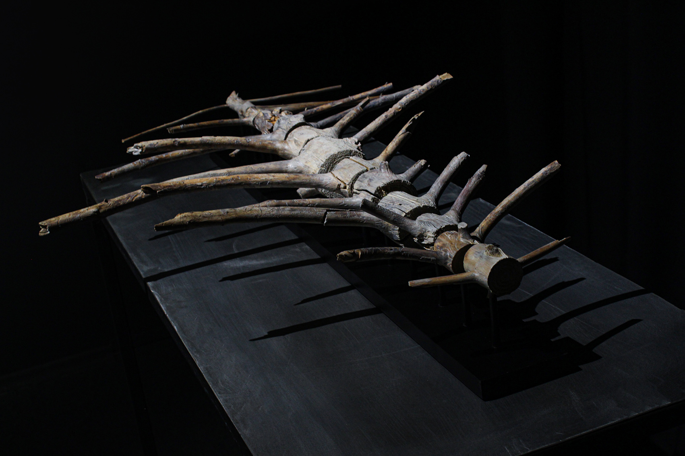

REMAINS
2023 · Assortymentna kimnata gallery ·Ivano-Frankivsk, Ukraine
Concept
Certain images of war resist disappearance. They cannot be forgotten, edited out, or fully processed. They arrive suddenly and remain, not as events, but as persistent visual traces. We encountered hundreds of photographs and videos that were impossible to look at, and equally impossible to avoid. Images that continue to exist within the viewer long after the moment of seeing, accompanied by the uneasy awareness that direct experience was avoided.
What unsettles most is not the explicit image itself, but the moment when the human body, fragmented by violence, becomes indistinguishable from its surroundings. When it ceases to be immediately recognized as a body and is perceived instead as part of the landscape, an anonymous form among others. This perceptual shift creates a lasting disturbance. Once it occurs, the gaze begins to search for similar distortions everywhere.
These visual residues follow the viewer beyond the sites of violence. Even within peaceful environments, such as the landscapes of a residency in the Carpathians, they persist. They appear in the curvature of roots, in broken branches, in the silhouettes of stones. Not as direct images, but as associations, echoes, involuntary recognitions.
The work reflects on this condition. On how images of violence remain embedded at the edge of perception, shaping the way reality is read. These are not memories in a narrative sense, but fragments that cling to consciousness, quiet and unresolved. Remains not of bodies, but of images, lodged within the act of seeing itself.